Der Unternehmer oder die Unternehmerin hat eine Gefährdungsbeurteilung nach § 5 Arbeitsschutzgesetz und § 3 DGUV Vorschrift 1 "Grundsätze der Prävention" durchzuführen.
Die Gefährdungsbeurteilung ist die systematische Ermittlung und Bewertung relevanter Gefährdungen der Beschäftigten mit dem Ziel, erforderliche Maßnahmen für Sicherheit und Gesundheit bei der Arbeit festzulegen. Grundlage ist eine Beurteilung der mit den Tätigkeiten verbundenen inhalativen (durch Einatmen), dermalen (durch Hautkontakt), oralen (durch Verschlucken) und physikalisch-chemischen Gefährdungen (z. B. Brand- und Explosionsgefährdungen) sowie der sonstigen durch Gefahrstoffe bedingten Gefährdungen. So muss die Einatemluft der Beschäftigten immer so viel Sauerstoff enthalten, dass eine Beeinträchtigung der Gesundheit nicht eintreten kann.
Der Unternehmer oder die Unternehmerin darf eine Tätigkeit mit Gefahrstoffen oder Biostoffen erst aufnehmen lassen, nachdem eine Gefährdungsbeurteilung gemäß § 6 der Gefahrstoffverordnung (GefStoffV) bzw. § 4 der Biostoffverordnung (BioStoffV) durchgeführt wurde und die erforderlichen Schutzmaßnahmen getroffen wurden. Nicht immer können technische Lösungen sofort umgesetzt werden. In diesen Fällen ist geeignete persönliche Schutzausrüstung (bei inhalativer Gefährdung Atemschutz) zur Verfügung zu stellen.
Die Gefährdungsbeurteilung muss in regelmäßigen Abständen und bei gegebenem Anlass überprüft und ggf. aktualisiert werden; das Überprüfungsintervall ist von der Unternehmerin oder dem Unternehmer festzulegen.
Bei der Gefährdungsermittlung werden Gefährdungen und Belastungen an einem bestimmten Arbeitsplatz, in einem Arbeitsbereich oder für eine Person/Personengruppe systematisch und umfassend untersucht. Sie soll sich an der Tätigkeit der Beschäftigten orientieren.
Bei der Ermittlung sind insbesondere zu erfassen:
Bezogen auf den Atemschutz hat die Unternehmerin oder der Unternehmer zu ermitteln, ob Gefährdungen durch die Umgebungsatmosphäre vorliegen. Für alle Arbeitsvorgänge ist festzustellen, ob Sauerstoffmangel, Schadstoffe oder beides die Umgebungsatmosphäre beeinflussen.
Gefährdungen des menschlichen Organismus, die über die Atemwege wirksam werden, können durch Sauerstoffmangel (siehe Kapitel 4.5.1.3.1) oder durch Schadstoffe der Umgebungsatmosphäre (siehe Kapitel 4.5.1.3.2) hervorgerufen werden.
Eine Gefährdungsbewertung beinhaltet die Risikoabschätzung der ermittelten Gefährdungen und Belastungen nach:
Hierbei muss nach Abwägung aller denkbaren Gefährdungen/Belastungen eingeschätzt werden, ob das vorliegende Risiko unter Einbeziehung der evtl. bereits vorhandenen Schutzmaßnahmen akzeptabel ist. Kann das Risiko für die Gesundheit oder das Leben des oder der Versicherten nicht akzeptiert werden, sind weitere Maßnahmen zu treffen, die dieses auf ein vertretbares Maß senken.
Der Unternehmer oder die Unternehmerin hat z. B. dafür zu sorgen, dass die Einatemluft der Beschäftigten so viel Sauerstoff enthält und außerdem so frei von Schadstoffen ist, dass eine Beeinträchtigung der Gesundheit nicht eintreten kann.
Die Unternehmerin oder der Unternehmer hat gemäß § 4 Abs. 5 "Arbeitsschutzgesetz" und §§ 7, 8 und 9 "Gefahrstoffverordnung" in folgender Rangfolge Maßnahmen zu treffen:
Der Einsatz von Atemschutzgeräten ist immer mit einer zusätzlichen Belastung verbunden. Grundsätzlich gilt:
SO VIEL SCHUTZ WIE NÖTIG, SO WENIG BELASTUNG WIE MÖGLICH!
Für die Auswahl hat der Unternehmer oder die Unternehmerin nach § 2 PSA-Benutzungsverordnung das vorgesehene Atemschutzgerät zu bewerten, um festzustellen, ob es
Nach der Bewertung hat die Unternehmerin oder der Unternehmer nach § 29 DGUV Vorschrift 1 das für die ermittelten Gefahren geeignete Atemschutzgerät unter Beteiligung der Versicherten und deren Vertreter auszuwählen und kostenlos zur Verfügung zu stellen.
Für die Auswahl des Atemschutzgerätes sind neben den Anforderungen an die atemschutzgerättragende Person folgende Einsatzbedingungen von entscheidender Bedeutung:
Sind die Einsatzbedingungen nicht hinreichend bekannt, wie dies z. B. bei Erkundungsgängen, Brandbekämpfungs- und Rettungsarbeiten sowie bei Arbeiten in Behältern und engen Räumen der Fall sein kann, müssen Isoliergeräte eingesetzt werden.
Die Auswahl ungeeigneter Geräte, aber auch der unsachgemäße Einsatz geeigneter Geräte, täuscht einen Schutz vor, der nicht vorhanden ist.
Für Schadstoffe, für die kein Grenzwert ausgewiesen ist, ist grundsätzlich die höchste Klasse auszuwählen. Wird gegen Schadstoffe (z. B. CMR-Stoffe) durch Technische Regeln oder andere nationale Vorschriften der Einsatz von bestimmten Atemschutzgeräten vorgegeben, so sind diese Geräte oder andere geeignete Geräte mit einem höheren Schutzniveau auszuwählen.
Die Schutzwirkung von Atemschutzgeräten ist nur durch sorgfältige Beachtung aller für den Einsatz wichtigen Bedingungen zu erreichen, z. B.:
Voraussetzungen für die richtige Auswahl sind ausreichende Kenntnisse über die Art und den örtlichen und zeitlichen Konzentrationsverlauf der Schadstoffe.
Die Hinweise und Beschränkungen in der Informationsbroschüre der Herstellerfirma sind in jedem Fall zu berücksichtigen.
Wichtig für die Bewertung und nachfolgende Auswahl des gemäß der Gefährdungsbeurteilung erforderlichen Atemschutzgerätes sind die ergonomischen Eigenschaften sowie die individuelle Anpassung. Unzureichende Berücksichtigung reduziert die Trageakzeptanz und kann akute bzw. langfristige gesundheitliche Schädigungen bewirken. Ziel des Bewertungs- und Auswahlprozesses muss es daher sein, ein den Gegebenheiten des Arbeitsplatzes und der atemschutzgerättragenden Person optimal angepasstes Atemschutzgerät auszuwählen.
Unter Berücksichtigung ergonomischer Aspekte ist eine optimale Anpassung dann erreicht, wenn das Atemschutzgerät
Im Rahmen der individuellen Anpassung von geschlossenen Atemanschlüssen sollte die tatsächlich erreichte Schutzwirkung mithilfe der in Kapitel 5 aufgeführten Methoden der Anpassungsüberprüfung ermittelt werden. Bei Wechsel des Atemanschlusses oder Veränderungen im Bereich der Dichtlinie an Gesicht oder Hals der atemschutzgerättragenden Person, ist die Anpassungsüberprüfung zu wiederholen.
Anhand einiger Fragen kann nach der individuellen Anpassung und einem Tragetest ermittelt werden, ob das Atemschutzgerät die Anforderungen erfüllt:
Werden obenstehende Fragen positiv beantwortet und sind ggf. die Ergebnisse aus der Anpassungsüberprüfung ebenfalls positiv, ist das Atemschutzgerät für den individuellen Gebrauch geeignet.
4.5.1.1 Allgemeines
Eine Möglichkeit, im Rahmen der Gefährdungsbeurteilung ein geeignetes Atemschutzgerät für Arbeit und Rettung auszuwählen, wird in den nachfolgenden Ablaufdiagrammen, in Anlehnung an ISO 16975-1, dargestellt. Diese sind bezogen auf die Einflussfaktoren in drei Blöcke aufgeteilt:
Die Ablaufdiagramme sollen in der oben aufgeführten Reihenfolge abgearbeitet werden und immer am oberen Einstieg begonnen werden.
Nachfolgend sind Symbole beschrieben, die in den Ablaufdiagrammen benutzt werden:
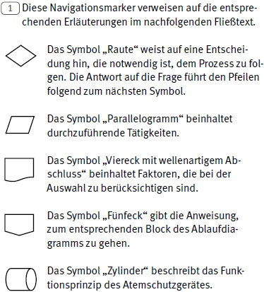
4.5.1.2 Ablaufdiagramme zur Auswahl von Atemschutzgeräten für Arbeit und Rettung
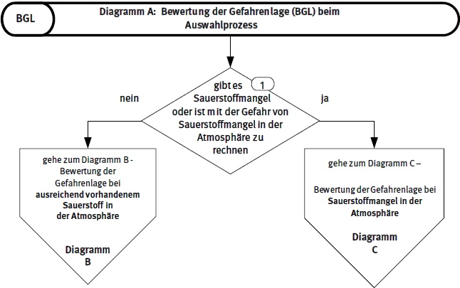
Abb. 4 Bewertung der Gefahrenlage (BGL) beim Auswahlprozess, Diagramm A
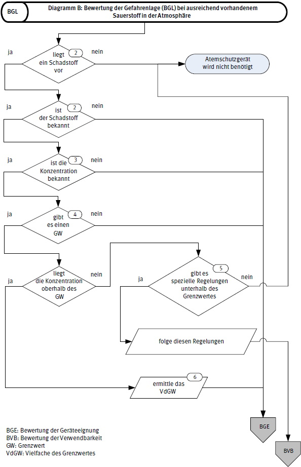
Abb. 5 Bewertung der Gefahrenlage (BGL) bei ausreichend vorhandenem Sauerstoff in der Atmosphäre, Diagramm B
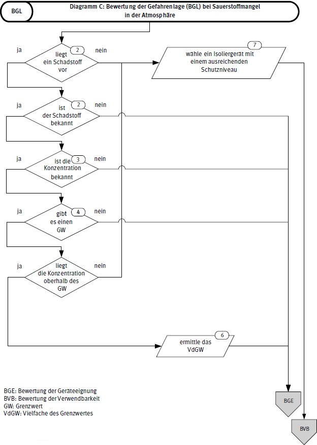
Abb. 6 Bewertung der Gefahrenlage (BGL) bei Sauerstoffmangel in der Atmosphäre, Diagramm C
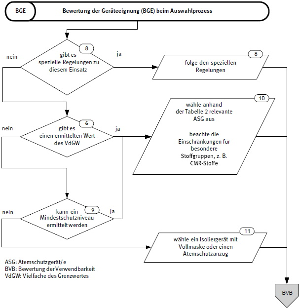
Abb. 7 Bewertung der Geräteeignung (BGE) beim Auswahlprozess
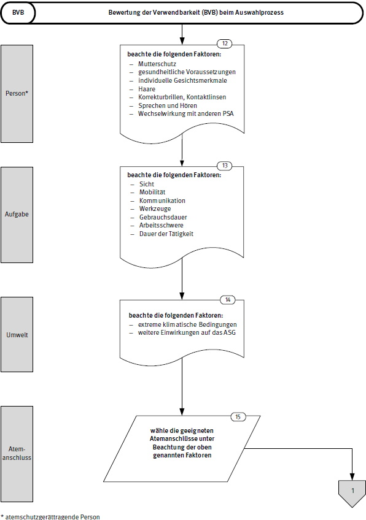
Abb. 8 Bewertung der Verwendbarkeit (BVB) beim Auswahlprozess, Teil 1
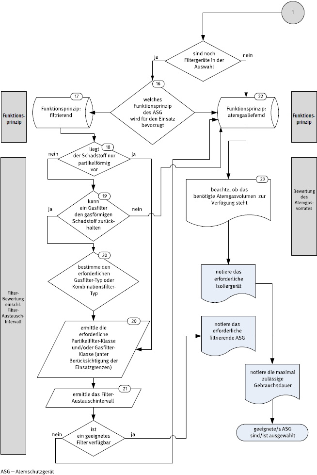
Abb. 9 Bewertung der Verwendbarkeit (BVB) beim Auswahlprozess, Teil 2
4.5.1.3 Erläuterungen zur Auswahl von Atemschutzgeräten für Arbeit und Rettung
4.5.1.3.1 [1] Sauerstoffkonzentration der Umgebungsatmosphäre
Der geringste zu erwartende Sauerstoffgehalt für Arbeit und Rettung bzw. Flucht ist zu ermitteln, um gesundheitliche Einschränkungen durch Sauerstoffmangel auszuschließen.
Sauerstoffmangel in der Umgebungsatmosphäre führt zu einem Sauerstoffmangel in den Zellen des menschlichen Körpers und blockiert wichtige Lebensfunktionen. Er wird durch die menschlichen Sinne nicht wahrgenommen. Sauerstoffmangel kann in Abhängigkeit der Ventilationsrate, der Einwirkdauer und der körperlichen Verfassung zu Bewusstlosigkeit führen, irreversible Schädigung von Gehirnzellen und sogar den Tod bewirken.
Soweit keine speziellen Regelungen (z. B. DGUV Regel 113-004 "Behälter, Silos und enge Räume; Teil 1: Arbeiten in Behältern, Silos und engen Räumen", DGUV Information 205-006 "Arbeiten in sauerstoffreduzierter Atmosphäre") andere Werte vorgeben, sind grundsätzlich die in der Tabelle 3 dargestellten Werte zu beachten:
Tabelle 3 Sauerstoffkonzentrationen und Auswahl von Atemschutzgeräten
| Sauerstoffgehalt in der Umgebungsatmosphäre in Vol. % | Auswirkung auf die Auswahl |
| ≥ 19 | keine, jedoch sind Filtergeräte generell möglich |
| < 19 ≥ 17 | Filtergeräte möglich (außer CO-Filter), jedoch in besonderen Bereichen (z. B. abwassertechnische Anlagen, Deponien) nur Isoliergeräte |
| < 17 | Isoliergeräte |
4.5.1.3.2 [2] Luftgetragene Schadstoffe in der Umgebungsatmosphäre
Die Aufnahme von Schadstoffen in den Körper kann je nach spezifischer (physikalischer, chemischer oder kombinierter) Wirkungsweise des Stoffes zu Lungenerkrankungen, akuten oder chronischen Vergiftungen, Strahlenschäden, durch Bakterien oder Viren übertragbare Krankheiten sowie zu sonstigen Gesundheitsschäden, z. B. Sensibilisierung, Allergien oder Krebserkrankungen, führen. Im Allgemeinen ist der Umfang dieser Schädigung abhängig von der Konzentration und der Einwirkdauer des Schadstoffes, der Wirkungsweise im Körper sowie von der körperlichen Verfassung.
Manche Schadstoffe können durch die Haut aufgenommen werden oder die Haut schädigen.
Kommen solche Stoffe in der Umgebungsatmosphäre vor, sollte der ganze Körper geschützt werden. Beispielsweise erfordern radioaktive oder ätzende Stoffe in der Umgebungsatmosphäre neben Atemschutz zusätzlich die Benutzung weiterer PSA.
Die luftgetragenen Schadstoffe am Arbeitsplatz bzw. an Fluchtwegen sind zu identifizieren. Hierzu sind Kenntnisse über eingesetzte, vorhandene und gelagerte Arbeitsstoffe oder beim Arbeitsprozess entstehende Schadstoffe notwendig. Arbeitsstoffe können eingesetzte Stoffe, Gemische und Reaktionsprodukte sein. Zudem sind eventuell auftretende Neben- und Abfallprodukte zu berücksichtigen. Sicherheitsdatenblätter können hierzu wichtige Informationen beitragen.
Liegen mehrere Schadstoffe vor, muss jeder Schadstoff einzeln und die möglichen Wechselwirkungen untereinander bewertet werden.
Bei biologischen Arbeitsstoffen wird auf die TRBA 100, TRBA 250, TRBA 255, TRBA 400, TRBA 405, TRBA 460, TRBA 462, TRBA 464 und TRBA 466 verwiesen.
4.5.1.3.3 [3] Schadstoffkonzentration
Die höchstmöglichen Schadstoffkonzentrationen unter ungünstigsten, aber realistischen Arbeits- bzw. Fluchtbedingungen sind zu ermitteln.
Die Schadstoffkonzentration kann durch Arbeitsplatzmessungen oder durch andere geeignete Methoden zur Ermittlung der Exposition (z. B. GESTIS-Stoffenmanager®) bestimmt werden.
Falls der Schadstoff nicht identifizierbar oder seine Eigenschaften nicht bekannt sind, ist von einer größtmöglichen Gefahr auszugehen. Für diesen Fall ist ein Isoliergerät mit einem Schutzniveau > 1000 auszuwählen.
4.5.1.3.4 [4] Grenzwerte (GW)
Grenzwerte definieren die höchstzulässige Konzentration eines Schadstoffes in der Umgebungsatmosphäre an Arbeitsplätzen. Hierbei handelt es sich um Arbeitsplatzgrenzwerte (AGW), Beurteilungsmaßstäbe (BM) und weitere orientierende Grenzwerte.
Arbeitsplatzgrenzwerte und Beurteilungsmaßstäbe für die identifizierten Schadstoffe sind nach folgender Rangfolge heranzuziehen, wobei die Grenzwerte nach Nr. 1 und Nr. 2 grundsätzlich als rechtsverbindlich gelten:
zu 1.: Grenzwerte aus der TRGS 900 (AGW) legen die jeweilige Konzentration fest, bei der weder akute noch chronische schädliche Auswirkungen auf die menschliche Gesundheit auftreten. Als Grundlage für die Auswahl des Schutzniveaus dient in diesem Fall der AGW.
Bei staubförmigen Schadstoffen können unterschiedliche AGW vorliegen. Falls für verschiedene Staubfraktionen eines Schadstoffes (gem. TRGS 402) unterschiedliche AGW vorliegen und die freigesetzte Staubfraktion nicht bekannt ist, ist der niedrigere AGW heranzuziehen.
Falls keine Wirkungsschwelle (AGW) ermittelt werden kann, wie es meist bei keimzellmutagenen und krebserzeugenden Stoffen der Fall ist, sind risikobezogene Beurteilungsmaßstäbe z. B. gemäß TRGS 910 heranzuziehen. Als Grundlage für die Auswahl des Schutzniveaus dient in diesem Fall die Toleranzkonzentration. Die aktuellen Listen zu Grenzwerten können auf der Homepage der BAuA eingesehen werden. zu 2.: Falls keine nationalen AGW oder Beurteilungsmaßstäbe zur Verfügung stehen, können EU-Arbeitsplatzgrenzwerte herangezogen werdenzu 3.: Nachrangig können gem. TRGS 402 internationale Grenzwerte (siehe www.dguv.de/ifa/gestislimit-values) und andere nicht rechtsverbindliche Beurteilungsmaßstäbe herangezogen werden. Die DNELs können den Sicherheitsdatenblättern entnommen werden.
zu 4.: Konnten nach 1. bis 3. keine Grenzwerte für den/die Schadstoff/e gefunden werden, kann die Methode zur Ermittlung des Mindestschutzniveaus, wie in Anhang 11.1 beschrieben, herangezogen werden.
BOELV bzw. BLV – (binding occupational exposure limit values, engl.) sind wissenschaftlich fundierte, aber auch sozioökonomische Aspekte und die technische Machbarkeit berücksichtigende rechtsverbindliche EU-Arbeitsplatzgrenzwerte, die durch die Richtlinie 98/24/EG festgelegt werden. Diese Arbeitsplatzgrenzwerte sind für die zeitlich gewichtete durchschnittliche Konzentration eines chemischen Stoffes in der Luft am Arbeitsplatz in Bezug auf einen gegebenen Referenzzeitraum (üblicherweise entweder um 8 Stunden oder 15 Minuten) definiert. Der BOELV/BLV ist als Mindeststandard von allen Mitgliedsstaaten der EU zu übernehmen. Der nationale Grenzwert (AGW, Beurteilungsmaßstab) für einen Arbeitsstoff darf also niedriger (d. h. strenger) sein als der EU-Arbeitsplatzgrenzwert, aber er darf nicht höher sein als dieser. Demnach entsprechen EU-Arbeitsplatzgrenzwerte nicht der Definition des AGW gem. GefStoffV, wonach bei dessen Einhaltung akute oder chronisch schädliche Auswirkungen auf die Gesundheit im Allgemeinen nicht zu erwarten sind. EU-Arbeitsplatzgrenzwerte werden daher nicht in der TRGS 900 geführt, sondern über § 7 Abs. 11 der GefStoffV in nationales Recht überführt.
DNELs – (derived no-effect level, engl.) bzw. DNEL-Werte sind Arbeitsplatzgrenzwerte gem. Anhang 1 der europäischen chemikalienrechtlichen REACH-Verordnung. Sie beschreiben von der Herstellerfirma oder dem Importeur angegebene Expositionsgrenzwerte, unterhalb deren es nach dem Kenntnisstand der Wissenschaft zu keiner Beeinträchtigung der menschlichen Gesundheit kommt. DNEL-Werte beruhen i. W. auf toxikologischen Bewertungen, sind herstellerfirmenabhängig, nicht rechtsverbindlich und in der GESTIS-DNEL-Liste der Deutschen Gesetzlichen Unfallversicherung (DGUV) veröffentlicht (https://dguv.de/ifa/gestis/gestis-dnel-liste/erlaeuterungen-zur-gestis-dnel-liste/index.jsp)
REACH – (Registration, Evaluation, Authorisation and Restriction of Chemicals, engl.) bezeichnet die Verordnung (EG) Nr. 1907/2006 (unmittelbar verbindliche EU-Chemikalienverordnung), mit der chemische Stoffe durch zentrale Registrierung, Bewertung, Zulassung in den EU-Markt gebracht werden müssen. Davon ausgenommen sind z. B. Abfälle, Polymere, radioaktive Stoffe. Zur Beschreibung der Exposition eines Stoffes und dessen Wirkung auf Mensch und Umwelt (Stoffsicherheitsbeurteilung gem. Artikel 10b), sind vom Antragsteller u.a. zur Ermittlung schädlicher Wirkungen auf die Gesundheit des Menschen DNEL-Werte abzuleiten, die in einer REACH-Stoffdatenbank veröffentlicht werden.
MAK – Die MAK-Werteliste (maximale Arbeitsplatz-Konzentration) der Senatskommission zur Prüfung gesundheitsschädlicher Arbeitsstoffe der deutschen Forschungsgemeinschaft (DFG-Arbeitsstoffkommission) ist Teil der jährlich erscheinenden Veröffentlichung (WILEY-VCH Verlag GmbH, Weinheim), die toxikologisch-arbeitsmedizinisch begründete höchstzulässige Konzentrationen von Arbeitsstoffen in der Luft an Arbeitsplätzen auflistet, bis zu denen nach dem gegenwärtigen Stand der wissenschaftlichen Kenntnis die Gesundheit der Beschäftigten bei einer langfristigen durchschnittlichen Wochenarbeitszeit von 40 Stunden nicht beeinträchtigt wird. Diese MAK-Werte sind nicht rechtsverbindlich, dienen jedoch als wissenschaftliche Grundlage für die staatliche Festlegung von verbindlichen Luftgrenzwerten.
Für biologische Arbeitsstoffe, wie Mikroorganismen, sowie für Enzyme können Grenzwerte generell nicht benannt werden. Gemäß Biostoffverordnung werden biologische Arbeitsstoffe nach ihrem Infektionsrisiko in 4 Risikogruppen eingeteilt. Für Enzyme gilt dies nicht. Praktisch wird ein Anhaltswert von 20 ng/m3 vom internationalen Verband der Waschmittelhersteller, A.I.S.E., benannt. Insofern ist eine spezifische Gefährdungsbeurteilung unter Einbeziehung medizinischen Sachverstandes erforderlich.
4.5.1.3.5 [5] Spezielle Regelungen unterhalb des Grenzwertes
Es ist zu prüfen, ob bei Konzentrationen unterhalb des Grenzwertes spezielle Regelungen zu berücksichtigen sind. Nach Tabelle 1 der TRGS 910 sind bei krebserzeugenden Gefahrstoffen unterhalb der Toleranzkonzentration, falls die Exposition oberhalb der Akzeptanzkonzentration liegt, risikobegrenzende Maßnahmen durch Atemschutzgeräte zu ergreifen.
4.5.1.3.6 [6] Vielfaches des Grenzwertes (VdGW)
Das Vielfache des Grenzwertes lässt sich wie folgt ermitteln:
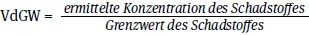
4.5.1.3.7 [7] Sauerstoffmangel
Liegt Sauerstoffmangel vor, ist grundsätzlich ein Isoliergerät auszuwählen. Liegt die Sauerstoffkonzentration unter 13 Vol.-%, ist ein Isoliergerät mit einem Mindestschutzniveau von 100 auszuwählen.
Bei Tätigkeiten in sauerstoffreduzierter Atmosphäre, für die spezielle Regelungen vorhanden sind, z. B. DGUV Information 205-006, kann von dieser Vorgabe abgewichen werden.
4.5.1.3.8 [8] spezielle Regelungen
Spezielle Regelungen sind z. B. Technische Regeln für Gefahrstoffe (TRGS), DGUV Regeln, DGUV Informationen sowie branchenspezifische Festlegungen. Sie können tätigkeitsbezogene Vorgaben für den Gebrauch von Atemschutzgeräten enthalten, die als Hinweise für die Auswahl zu beachten sind.
Darunter fallen spezifische Empfehlungen für den Einsatz von Atemschutzgeräten, für vorgegebene Vielfache des Grenzwertes (VdGW) bzw. Mindestschutzniveaus gegenüber Expositionen bei bestimmten Tätigkeiten oder Arbeitsverfahren.
Derartige Vorgaben finden sich z. B. in:
4.5.1.3.9 [9] Ermittlung des Mindestschutzniveaus
Eine Methode zur Ermittlung des Mindestschutzniveaus basiert ebenso wie das "Einfache Maßnahmenkonzept Gefahrstoffe" (EMKG) auf dem Control-Banding-Ansatz.
Mit dieser nichtmesstechnischen Methode lässt sich ein Mindestschutzniveau ermitteln, wenn keine AGW oder Beurteilungsmaßstäbe vorliegen.
Die Methode benutzt die Gefahrenhinweise (H-Sätze) aus der Einstufung von Schadstoffen und Gemischen, in Verbindung mit deren Staubungsverhalten bzw. Flüchtigkeit und ihrer verwendeten Menge.
Einzelheiten zur Anwendung siehe Kapitel 11.1.
Eine weitere Methode bietet der GESTIS-Stoffenmanager®. Dieser ist eine Gefahrstoffmanagement-Software zur Umsetzung des Control-Banding-Ansatzes. Er dient der quantitativen, nichtmesstechnischen Expositionsabschätzung anhand bestimmter Arbeitsplatz- und Tätigkeitsparameter wie z. B. Staubungsverhalten, Korngröße, Stoffmenge, Lüftung und Dampfdruck bei Flüssigkeiten. Es wird ein zeitlich gewichteter Schichtmittelwert berechnet, der mit den entsprechenden Grenzwerten verglichen werden kann.
4.5.1.3.10 [10] Auswahl eines Atemschutzgerätes nach Mindestschutzniveau
Die in der Tabelle 2 angegebenen Schutzniveaus von Atemschutzgeräten geben an, bis zu welchem Vielfachen des Grenzwertes das Atemschutzgerät ausreichend Schutz gegen die Schadstoffe in der Umgebungsatmosphäre bietet.
Es ist zu beachten, dass Atemschutzgeräte mit Filtern nicht bei Sauerstoffmangel schützen. Bei weniger als 17 Vol.-% bzw. bei CO-Filtern bei weniger als 19 Vol.-% Sauerstoff in der Umgebungsatmosphäre dürfen diese nicht eingesetzt werden.
Verursachen Schadstoffe in der Umgebungsatmosphäre auch Reizungen oder Schädigungen der Augen, so ist Augenschutz erforderlich. Zweckmäßig ist in diesem Fall die Auswahl eines Atemanschlusses, der gleichzeitig die Augen schützt (z. B. Vollmaske oder Atemschutzhaube/-helm).
Bei besonderen Stoffgruppen und Gemischen (CMR-Stoffe, radioaktive Stoffe, luftgetragene biologische Arbeitsstoffe mit der Einstufung in Risikogruppe 2 und 3, Enzyme) sind grundsätzlich Atemschutzgeräte mit einem Mindestschutzniveau von 20 auszuwählen. Davon kann in einzelnen Fällen abgewichen werden, wenn innerhalb der Gefährdungsbeurteilung nachgewiesen und dokumentiert wurde, dass ein Atemschutzgerät einer geringeren Klasse ausreichend wirksam ist, oder wenn allgemein für bestimmte Fälle die Wirksamkeit von Atemschutzgeräten geringerer Klasse im Rahmen von Technischen Regeln bestätigt worden ist. Beispielsweise wird bei Einhaltung der speziellen Regelungen gem. TRGS 517, TRGS 519, TRGS 521 und TRGS 559 ein ausreichender Personenschutz mit der jeweils angegebenen niedrigeren Filterklasse erreicht.
Beispiel 1 – Chlor:
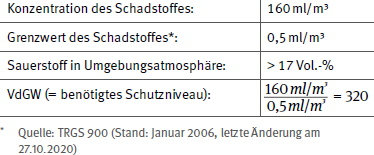
Beispielhaft kommen folgende Atemschutzgeräte in Frage:
Tabelle 4 Beispiele für Atemschutzgeräte mit Schutzniveau > 320
| Schutzniveau | |
| Vollmaske oder Mundstückgarnitur mit Gasfilter | 400 |
| Vollmaske, Halbmaske oder Viertelmaske mit Gebläse und Gasfilter TM3 | 500 |
| Druckluftschlauchgerät (Klasse 4A) mit geschlossenem Atemschutzanzug | 1.000 |
| Druckluftschlauchgerät (Klasse 4A) mit Vollmaske der Klasse 1, 2, 3 | 1.000 |
| Frischluftschlauchgerät Klasse 1 und 2 mit Vollmaske oder Mundstückgarnitur | 1.000 |
| Druckluftschlauchgerät mit Vollmaske und Lungenautomat in Normaldruckausführung | 1.000 |
| Druckluftschlauchgerät mit Vollmaske und Lungenautomat in Überdruckausführung | > 1.000 |
| Behältergerät mit Vollmaske und Lungenautomat oder Mundstückgarnitur und Lungenautomat in Normaldruckausführung | 1.000 |
| Behältergerät mit Vollmaske und Lungenautomat oder Mundstückgarnitur und Lungenautomat in Überdruckausführung | > 1.000 |
Da im Beispiel mehr als 17 Vol.-% Sauerstoff in der Umgebungsatmosphäre vorhanden sind, kann ggf. unter Berücksichtigung aller anderen Faktoren auf den Einsatz von Isoliergeräten verzichtet werden. Mit den ermittelten Gerätetypen wird die Bewertung der Verwendbarkeit (BVB) fortgesetzt.
4.5.1.3.11 [11] Auswahl eines Atemschutzgerätes mit Schutzniveau von mindestens 1000
Ist das Vielfache des Grenzwertes nicht ermittelbar, so muss mit maximalem Schutz gearbeitet werden. Es kommen in diesem Fall nur Atemschutzgeräte aus Tabelle 4 mit einem Schutzniveau von mindestens 1000 in Frage.
Mit diesen Geräten wird die Bewertung der Verwendbarkeit (BVB) fortgesetzt.
4.5.1.3.12 [12] Personenbezogene Faktoren
4.5.1.3.12.1 Mutterschutz
Für schwangere Frauen sind im Mutterschutzgesetz Beschäftigungsbeschränkungen vorgegeben, die bei der Auswahl von Atemschutzgeräten berücksichtigt werden müssen. Wenn Schwangere persönliche Schutzausrüstung tragen, darf diese keine Belastung darstellen. Für den Atemschutz bedeutet das, dass nur Atemschutzgeräte auszuwählen sind, die keine arbeitsmedizinische Vorsorge erfordern. Dies schließt die Auswahl von belastenden Atemschutzgeräten aus.
4.5.1.3.12.2 Gesundheitliche Voraussetzungen
Der Gebrauch der meisten Atemschutzgeräte stellt eine erhebliche Beanspruchung dar. Diese ergibt sich u. a. aus dem Gerätegewicht, den Atemwiderständen, dem Tragekomfort und den psychischen Faktoren. Die Einsatzbedingungen können diese Beanspruchung zusätzlich beeinflussen.
Je nach eingesetztem Atemschutzgerät kann eine arbeitsmedizinische Vorsorge gemäß Arbeitsmedizinischer Regel (AMR 14.2 – siehe Kapitel 9.1) erforderlich werden.
Diese Vorsorge dient ausschließlich dem individuellen Gesundheitsschutz der atemschutzgerättragenden Person.
Besteht durch den Gebrauch des Atemschutzgerätes für die jeweilige Person eine akute Gefahr, die mit der Fürsorgepflicht des Unternehmers oder der Unternehmerin nicht vereinbar ist, oder können Dritte, beispielsweise in einer Arbeitsgruppe, durch eine solche Person aufgrund deren mangelnder Eignung gefährdet werden, kann zur Eignungsfeststellung eine entsprechende Untersuchung erforderlich werden. Die Grundlagen hierfür können z. B. tarifliche, betriebliche oder individuelle Vereinbarungen sein.
4.5.1.3.12.3 Individuelle Gesichtsmerkmale und Haare
Der Dichtsitz von geschlossenen Atemanschlüssen kann insbesondere durch folgende Merkmale beeinflusst werden:
Wird die jeweilige Dichtlinie des Atemanschlusses durch eines oder mehrere der oben genannten Merkmale unterbrochen, so ist dieser Atemanschluss für diese Person nicht geeignet.
4.5.1.3.12.4 Korrekturbrillen, Kontaktlinsen
Brillen mit Bügeln können für die Benutzung mit einem Atemschutzgerät ungeeignet sein. Beim Gebrauch von Vollmasken wird durch den Bügel die Dichtlinie unterbrochen. Für Personen, die eine Brille tragen, können daher besondere optische Sehhilfen, z. B. spezielle Maskenbrillen, notwendig werden. Bei Hauben oder Helmen kann es beim Auf- oder Absetzen zum Verrutschen der Brille kommen.
Das Tragen von Kontaktlinsen birgt zusätzliche Risiken. Der Zugriff bei Verrutschen der Linse ist ohne Unterbrechung der Dichtlinie nicht möglich. Ferner kann es zu Augenreizungen kommen, z. B. durch den vom Gerät erzeugten Luftstrom.
4.5.1.3.12. Sprechen und Hören
Atemschutzgeräte können die Verständigung beeinträchtigen. Dies kann durch Dämpfung der Stimme, Minderung der Lautstärke, Überlagerung durch systembedingte Geräusche und insbesondere durch die Abdeckung der Ohren hervorgerufen werden.
Beim Gebrauch einer Mundstückgarnitur ist verbale Kommunikation nicht möglich.
Es ist sicherzustellen, dass die atemschutzgerättragende Person die akustische Warneinrichtung des Atemschutzgerätes, wenn vorhanden, wahrnehmen kann.
Das Tragen von Hörgeräten kann zusätzliche Risiken bergen, die bei der Auswahl eines Atemschutzgerätes sowie eines passenden Atemanschlusses zu berücksichtigen sind.
4.5.1.3.12.6 Wechselwirkung mit anderen persönlichen Schutzausrüstungen (Kompatibilität)
Beim Einsatz von Atemschutzgeräten zusammen mit anderen persönlichen Schutzausrüstungen darf keine gegenseitige Beeinträchtigung der jeweiligen Schutzwirkung eintreten (§ 2 Abs. 3 "PSA-Benutzungsverordnung"). Zusätzlich sind die ergonomischen, physischen und psychischen Auswirkungen der kombinierten persönlichen Schutzausrüstungen in ihrer Gesamtheit zu betrachten, um eine Überbeanspruchung der atemschutzgerättragenden Person, z. B. durch das Gewicht der gesamten PSA, das Umgebungsklima, den eingeschränkten Wärmeaustausch in Schutzanzügen oder die Arbeitsschwere, zu vermeiden.
Atemschutzgeräte, die von der Herstellerfirma dafür vorgesehen sind, mit anderen persönlichen Schutzausrüstungen in Kombination getragen zu werden, sind in diesem Fall zu bevorzugen, da die Herstellerfirma die Wechselwirkung in der Regel berücksichtigt hat, z. B. den Gebrauch des Atemschutzgerätes in Kombination mit persönlicher Schutzausrüstung gegen Absturz.
Für den Bereich der Feuerwehr wurde die Wechselwirkung von PSA untereinander betrachtet und für spezielle Einsätze gesonderte Empfehlungen gegeben. Siehe hierzu z. B. DGUV Information 205-014 "Auswahl von persönlicher Schutzausrüstung für Einsätze bei der Feuerwehr".
Für einige Spezialeinsätze wie Schweißen oder Strahlarbeiten können weitere persönliche Schutzausrüstungen (Kopfschutz, Augenschutz) bereits integraler Bestandteil des Atemschutzgerätes sein.
Beispiele für mögliche Wechselwirkungen mit anderer PSA:
4.5.1.3.13 [13] Aufgabenbezogene Faktoren
4.5.1.3.13.1 Sicht, visuelle Anforderungen
Es ist darauf zu achten, dass die atemschutzgerättragende Person bei der Durchführung der Aufgabe die notwendigen Arbeitsabläufe sicher erkennen kann.
Für bestimmte Tätigkeiten, z. B. feinmotorische Montagearbeiten, Airbrusharbeiten oder Texterkennung ist auf eine ausreichende optische Qualität der Sichtscheibe zu achten.
Bei der Benutzung von Leitern, dem Führen von Fahrzeugen, Erdbaumaschinen oder Flurförderzeugen ist ein Atemschutzgerät mit ausreichend großem Gesichtsfeld erforderlich.
4.5.1.3.13.2 Mobilität
Die Arbeitsplatzverhältnisse und die erforderliche Mobilität der atemschutzgerättragenden Person sind zu berücksichtigen. Das Atemschutzgerät kann zum einen den Aktionsradius der atemschutzgerättragenden Person begrenzen, zum anderen die Person in ihrer Beweglichkeit am Arbeitsplatz beeinträchtigen.
Beispielsweise erfordern Arbeiten in Behältern und engen Räumen besondere Betrachtungen (weitere Informationen siehe DGUV Regel 113-004, Teil 1).
Bei nicht frei tragbaren Isoliergeräten (Schlauchgeräte) ist der Einsatzbereich durch die Schlauchlänge begrenzt. Sind beim Zugang zum Gefahrenbereich längere Strecken, mehrere Stockwerke, Verkehrswege zu passieren oder Leitern zu benutzen, ist darauf zu achten, dass es zu keiner Unterbrechung der Luftzuführung kommt und der Zuführungsschlauch nicht hängen bleibt oder beschädigt werden kann.
Bei frei tragbaren Isoliergeräten (z. B. Pressluftatmer) ist die Entfernung zwischen dem Gefahrenbereich und dem nächstgelegenen unbelasteten Bereich zu berücksichtigen, damit für den Rückweg ausreichend Atemgas zur Verfügung steht.
Die Beweglichkeit der atemschutzgerättragenden Person wird beim Gebrauch eines Atemschutzanzugs reduziert, was z. B. beim Passieren von Engstellen zu berücksichtigen ist. Ferner können durch das zusätzliche Gewicht des Atemschutzgerätes Bewegungsabläufe erschwert werden.
4.5.1.3.13.3 Kommunikation
Die Verständigungsmöglichkeit der atemschutzgerättragenden Person mit ihrem Umfeld muss für die Durchführung der Aufgabe ausreichend sein.
Zur Unterstützung der Kommunikation werden verschiedene technische Hilfsmittel angeboten, die mit dem ausgewählten Atemschutzgerät kompatibel sein müssen (Sprachverstärker, Sprechfunkgerät etc.).
Ist z. B. bei bestimmten Arbeiten in Behältern und engen Räumen eine Kommunikation zwischen der arbeitenden Person und dem Sicherungsposten notwendig, muss das Atemschutzgerät diese Kommunikation ermöglichen.
4.5.1.3.13.4 Werkzeuge
Der Gebrauch von Werkzeugen (z. B. Schweißgeräte, Farbspritzpistolen, Druckluft- und Elektrowerkzeuge) kann die Funktion von Atemschutzgeräten durch Wechselwirkungen beeinflussen.
Werden beispielsweise Atemschutzgerät und Druckluftwerkzeug von demselben Druckluftsystem versorgt, ist sicherzustellen, dass das Druckluftsystem Atemgas in ausreichender Menge und Qualität zur Verfügung stellt.
Druckluft- oder Elektrowerkzeuge können durch Vibrationen, Druckstöße, Rückschlag oder Aufschlag von Partikeln die Schutzwirkung verringern, insbesondere durch Beeinträchtigungen des Dichtsitzes und der Ventile.
Atemschutzgeräte, die bei Schweiß-, Trenn- oder Schleifarbeiten gebraucht werden, können heißen geschmolzenen Partikeln oder Funkenflug ausgesetzt sein. Dies kann das Atemschutzgerät beschädigen und Funktionsteile, z. B. Filter, entzünden. Ein Filterbrand kann zu einer CO-Vergiftung der atemschutzgerättragenden Person führen.
Für diese Tätigkeiten sollten Atemschutzgeräte eingesetzt werden, die so aufgebaut sind, dass der Eintritt von Funken soweit wie möglich vermieden wird.
Wenn bei Tätigkeiten das Risiko einer Entflammbarkeit besteht, sollte eine ausreichende Flammen- bzw. Hitzebeständigkeit des Atemschutzgerätes gegeben sein.
Bei Atemschutzgeräten, die bei Spritz- und Sprüharbeiten eingesetzt werden, kann die visuelle Wahrnehmung durch Verschmutzung der Sichtscheibe und die Funktion von Ventilen beeinträchtigt werden.
Die Reinigung der Atemschutzgeräte kann schwierig sein; es sollten bevorzugt Atemschutzgeräte für den einmaligen Gebrauch oder solche mit austauschbaren Sichtscheiben bzw. Schutzfolien für Sichtscheiben eingesetzt werden.
Klebstoffe oder andere Sprühmittel können die Funktion von Ventilen schnell beeinträchtigen oder gar aufheben, wenn sie nicht zeitnah gereinigt oder regelmäßig ausgetauscht werden.
Bei Tätigkeiten mit stark erhöhter Luftfeuchtigkeit, z. B. Arbeiten mit Hochdruckreiniger, kann die Filterkapazität von Atemschutzfiltern beeinträchtigt werden. Für diese Tätigkeiten sollten Atemschutzgeräte eingesetzt werden, die so aufgebaut sind, dass der Eintritt von Feuchtigkeit soweit wie möglich vermieden wird.
4.5.1.3.13.5 Gebrauchsdauer
Die Gebrauchsdauer zur Erfüllung der Aufgabe ist zu ermitteln. Zu berücksichtigen sind u. a. Wegezeiten sowie Dekontaminationsarbeiten für die Aufgabe unter Atemschutz.
Eine Überbeanspruchung der atemschutzgerättragenden Person ist durch eine Begrenzung der Gebrauchsdauer zu vermeiden. Hierbei sind u. a. das Gewicht, der Atemwiderstand, Temperatur und Feuchte des Einatemgases, das Klima in einem Atemschutzanzug sowie weitere Arbeitserschwernisse, z. B. Umgebungsklima, Arbeitsschwere, Körperhaltung, räumliche Enge zu berücksichtigen.
Anhaltswerte für die Gebrauchsdauer und die erforderliche Erholungsdauer liefert Kapitel 8.
4.5.1.3.13.6 Arbeitsschwere
Die zu erwartende Arbeitsschwere ist zu berücksichtigen, um ein geeignetes Atemschutzgerät mit ausreichender Atemgasversorgung bzw. Filterstandzeit auszuwählen.
Die Kategorie der Arbeitsschwere (A1 – A4) ergibt sich aus den Tätigkeiten und dem daraus resultierenden durchschnittlichen Atemminutenvolumen (siehe Tabelle 5).
Tabelle 5 Beispiele von Tätigkeiten und zugehörige Arbeitsschwere
| Beispiele von Tätigkeiten | Bereiche | durchschnittliches Atemminutenvolumen [l/min] |
Kategorie der Arbeits- schwere |
Durchschnitt für vollständige Arbeitsschichten, Pausen eingeschlossen
|
leicht bis moderat |
≤ 20 | A1 |
Durchschnitt für vollständige Arbeitsschichten, Pausen eingeschlossen
|
moderat bis schwer |
> 20-40 | A2 |
kontinuierliches Arbeiten für bis zu 2 h ohne Pausen:
|
schwer bis sehr schwer |
> 40-60 | A3 |
kontinuierliches Arbeiten für weniger als 5 min ohne Pausen
|
sehr schwer bis maximal |
> 60 | A4 |
Die in Tabelle 5 angegebenen Werte sind Orientierungswerte und können bei individueller Betrachtung für eine bestimmte atemschutzgerättragende Person zu einer Zuordnung in eine andere Kategorie führen.
Eine Methode zur Ermittlung der individuellen Arbeitsschwere für eine atemschutzgerättragende Person ist über die Bestimmung ihrer maximalen aeroben Kapazität möglich und wird in ISO/TS 16976-1 "Human Factors Part 1: Metabolic Rates and Respiratory Flow Rates" beschrieben.
4.5.1.3.13.7 Dauer der Tätigkeit
Bei der Auswahl des Atemschutzgerätes ist die voraussichtliche Dauer der Tätigkeit unter Atemschutz zu beachten. Dabei sind z. B. die zulässige Gebrauchsdauer und damit verbundene Erholungszeiten, Filterwechselintervalle sowie der zur Verfügung stehende Luftvorrat zu berücksichtigen.
4.5.1.3.14 [14] Umweltbedingungen am Einsatzort
Die atemschutzgerättragende Person und das Atemschutzgerät sind den Umweltbedingungen am Einsatzort ausgesetzt. Extreme Umweltbedingungen können die Eigenschaften der Atemschutzgeräte und/oder die Leistungsfähigkeit der atemschutzgerättragenden Person beeinträchtigen.
Dies können sein:
Unter sehr kalten Umgebungsbedingungen können Funktionsbeeinträchtigungen am Atemschutzgerät auftreten, wie z. B. Reduzierung der Akkulaufzeit oder Beeinträchtigungen von elektronischen Anzeigen. Bei gebläseunterstützten Filtergeräten sowie Schlauchgeräten können durch den kontinuierlichen Luftstrom bei der atemschutzgerättragenden Person Kälteempfinden, Erkältungskrankheiten oder gar Erfrierungen auftreten.
Bei hohen Temperaturen, insbesondere beim Gebrauch von Atemschutzgeräten in Verbindung mit Schutzkleidung und schwerer Arbeit, kann Unwohlsein, Schwindel, Schwäche, Desorientierung, Bewusstlosigkeit hervorgerufen werden. Die mit dieser Symptomatik einhergehende Erhöhung der Körperkerntemperatur kann sogar zum Tode führen.
Einer Erhöhung der Körperkerntemperatur kann durch besondere technische Auslegung von Luftzirkulation innerhalb z. B. eines Atemschutzanzuges entgegengewirkt werden. Es hat sich erwiesen, dass bei einer Umspülung des Kopfes im Zusammenwirken mit einem zum Körper gerichteten Luftstrom die Wärme vom Körper abtransportiert wird.
Atemschutzgeräte mit offenen Atemanschlüssen (Haube/Helm) und Gebläseunterstützung oder kontinuierlichem Atemgasstrom können kühlend wirken. Weitere technische Möglichkeiten sind Trinkanschlüsse oder Kühlvorrichtungen, wie z. B. das Tragen von Kühlwesten.
Kann während des Einsatzes eine gefährliche explosionsfähige Atmosphäre nicht ausgeschlossen werden, sind dafür zugelassene, explosionsgeschützte Atemschutzgeräte auszuwählen.
Bestimmte Gefahrstoffe (z. B. H2S, Phosphin) können bei direktem Kontakt mit Materialien des Atemschutzgerätes diese durchdringen und somit die atemschutzgerättragende Person gefährden. Des Weiteren können Druckluft-Zuführungsschläuche von Atemschutzgeräten im Verlauf von der Druckluftquelle bis zur atemschutzgerättragenden Person Gefahrstoffen (z. B. Benzol) ausgesetzt sein. In diesen Fällen müssen die Atemschutzgeräte sowie Druckluft-Zuführungsschläuche ausreichend widerstandsfähig gegenüber diesen Gefahrstoffen beschaffen sein.
Wärmestrahlung kann negative Effekte auf das Atemschutzgerät und die atemschutzgerättragende Person haben. Bauteile des Gerätes können infolge extrem hoher Wärmestrahlung erweichen und sich verformen oder schmelzen. Die in der Informationsbroschüre der Herstellerfirma festgelegten Temperaturgrenzen für den Einsatz sind zu beachten.
Hohe Luftgeschwindigkeiten (> 2 m/s) im Arbeitsbereich können einen negativen Effekt auf den Atemschutz haben. Dies gilt im Wesentlichen für offene Atemanschlüsse und sollte bei der Auswahl berücksichtigt werden.
4.5.1.3.15 [15] Atemanschlüsse
Atemanschlüsse werden nach Abdeckungsbereichen unterschieden und können in geschlossener und offener Form ausgeführt sein. Bei einem geschlossenen Atemanschluss liegt dieser dicht an der Haut der atemschutzgerättragenden Person an und bildet eine Dichtlinie. Bei einem offenen Atemanschluss liegt dieser nur teilweise oder gar nicht an der Haut an und bildet keine Dichtlinie.
Tabelle 6 Abdeckungsbereiche der Atemanschlüsse
| Abdeckungsbereich | Ausführung | Beispiel |
| Mund (mit verschlossener Nase) | geschlossen | Mundstückgarnitur mit Nasenklemme |
| Mund und Nase | geschlossen | Halbmaske, Viertelmaske und filtrierende Halbmaske |
| Mund, Nase und Augen (Gesicht) | geschlossen | Vollmaske |
| offen | Visier | |
| Kopf | geschlossen | Haube mit Halsabdichtung |
| offen | Haube, Helm | |
| Körper oder Oberkörper | geschlossen | Schutzanzug* |
| offen | Bluse, Schutzanzug |
* Ein Schutzanzug hat keine definierte Dichtline zur atemschutzgerättragenden Person, kann jedoch zur Umgebungsatmosphäre dicht abschließen.
Verursachen Schadstoffe in der Umgebungsatmosphäre auch Reizungen oder Schädigungen der Augen, ist Augenschutz erforderlich. Zweckmäßigerweise sollte dann ein Atemanschluss ausgewählt werden, der gleichzeitig die Augen schützt, zum Beispiel eine Vollmaske oder eine Atemschutzhaube.
Auswahlhinweise und mögliche Einschränkungen für die Auswahl von geeigneten Atemanschlüssen sind in der folgenden Tabelle dargestellt:
Tabelle 7 Auswahlhinweise und mögliche Einschränkungen für die Auswahl von geeigneten Atemanschlüssen
| Mundstückgarnitur | Viertel-/Halbmaske | Vollmaske | Helm/Haube | Atemschutzanzug | |
| Beeinflussung der Dichtlinie durch individuelle Gesichtsmerkmale | Piercings und Narben im Mundbereich; Zahnprothesen | Piercings und Narben im Mundbereich; Kopfform | Piercings und Narben im Mundbereich; Kopfform | * | * |
| Unterbrechung der Dichtlinie durch Gesichtsbehaarung | * | Bart/Haare im Bereich der Dichtlinie | Bart/Haare im Bereich der Dichtlinie | * | * |
| Korrekturbrillen | * | ggf. Sichtbehinderung durch Beschlagen oder falsche Position | Maskenbrille notwendig | Sitz der Korrekturbrille kann ggf. nicht korrigiert werden, Anlege- und Tragekomfort ggf. beeinträchtigt | Sitz der Korrekturbrille kann ggf. nicht korrigiert werden, Anlegekomfort ggf. beeinträchtigt |
| Kontaktlinsen | * | * | Sitz der Kontaktlinsen kann nicht korrigiert werden, Luftströmung beeinflusst ggf. Tragekomfort | Sitz der Kontaktlinsen kann ggf. nicht korrigiert werden, Luftströmung beeinflusst ggf. Tragekomfort | Sitz der Kontaktlinsen kann ggf. nicht korrigiert werden, Luftströmung beeinflusst ggf. Tragekomfort |
| Sprechen | nicht möglich | Verständlichkeit ggf. eingeschränkt | Verständlichkeit ggf. eingeschränkt | Verständlichkeit ggf. eingeschränkt | Verständlichkeit ggf. eingeschränkt |
| Hören | akustische Wahrnehmung durch systembedingte Geräusche ggf. eingeschränkt | akustische Wahrnehmung durch systembedingte Geräusche ggf. eingeschränkt | akustische Wahrnehmung durch systembedingte Geräusche ggf. eingeschränkt | akustische Wahrnehmung durch systembedingte Geräusche ggf. eingeschränkt, ggf. Abdeckung der Ohren | akustische Wahrnehmung durch systembedingte Geräusche ggf. eingeschränkt, Abdeckung der Ohren |
| Hörgeräte | Kopfbänderung beeinflusst ggf. Tragekomfort | Kopfbänderung beeinflusst ggf. Tragekomfort | Kopfbänderung beeinflusst ggf. Tragekomfort | Tragekomfort ggf. beeinträchtigt | * |
| Wechselwirkung mit anderer PSA | ggf. Beeinträchtigung der Schutzwirkung | ||||
| Sicht | * | Sichtfeld ggf. eingeschränkt | Sichtfeld und optische Wahrnehmung ggf. eingeschränkt | Sichtfeld und optische Wahrnehmung ggf. eingeschränkt | Sichtfeld und optische Wahrnehmung ggf. eingeschränkt |
| Mobilität | * | * | * | * | Bewegungsfreiheit ggf. eingeschränkt |
* Mit diesem Atemanschluss sind zu diesem Punkt keine Einschränkungen zu erwarten.
4.5.1.3.16 [16] Funktionsprinzip des Atemschutzgerätes
Mögliche Beurteilungskriterien unter Berücksichtigung der Entscheidungen aus der Bewertung der Verwendbarkeit und zusätzlichen Überlegungen wie z. B.:
4.5.1.3.17 [17] Funktionsprinzip: filtrierend
4.5.1.3.17.1 Allgemeines
Zum Schutz gegen feste und flüssige Aerosole werden Partikelfilter benutzt. Zum Schutz gegen Gase und Dämpfe sind Gasfilter erforderlich. Tritt beides gemeinsam auf, so ist ein Kombinationsfilter einzusetzen. Gegen radioaktives Iod einschließlich radioaktivem Iodmethan sind nur Reaktorfilter zulässig.
EIN GASFILTER SCHÜTZT NICHT GEGEN PARTIKEL, EIN PARTIKELFILTER NICHT GEGEN GASE.
Beim Vorliegen mehrerer Schadstoffe ist jeder Schadstoff einzeln zu betrachten. Gleichzeitig sind mögliche Wechselwirkungen der Schadstoffe zu beachten.
Bei der Auswahl von Filtertyp und Filterklasse sind insbesondere folgende Faktoren zu beachten:
In Verbindung mit einem Gebläsefiltergerät dürfen nur die für dieses Gerät speziell zugelassenen Filter eingesetzt werden.
4.5.1.3.17.2 Partikelfilter und partikelfiltrierende Halbmasken
Partikelfilter werden gegen feste und flüssige Aerosole, z. B. Staub, Rauch, Nebel, benutzt. Gegen Partikel radioaktiver Stoffe sowie CMR-Stoffe und luftgetragene biologische Arbeitsstoffe der Risikogruppe 3 dürfen Partikelfilter der Klasse P3 eingesetzt werden. Partikelfilter der Klasse P2 dürfen gegen CMR-Stoffe sowie luftgetragene biologische Arbeitsstoffe der Risikogruppe 3 nur dann eingesetzt werden, wenn eine ausreichende Schutzwirkung des Atemschutzgerätes nachgewiesen und in der Gefährdungsbeurteilung für diesen Einzelfall dokumentiert ist.
Bei der Benutzung von Partikelfiltern und partikelfiltrierenden Halbmasken sind hinsichtlich der Gebrauchsdauer die zusätzlichen Klassifizierungen, gekennzeichnet durch "NR" ("non-reusable") oder "R" ("reusable"), zu beachten.
Ein Wiedergebrauch von Partikelfiltern und partikelfiltrierenden Halbmasken durch mehrere Personen ist aus hygienischen Gründen nicht zulässig, da hierbei eine Desinfizierung nicht möglich ist.
Gegen radioaktive Stoffe und luftgetragene biologische Arbeitsstoffe dürfen Partikelfilter grundsätzlich nur einmal und höchstens für die Dauer einer Arbeitsschicht gebraucht werden.
4.5.1.3.17.3 Gasfilter
Gasfilter sollen grundsätzlich nur gegen Gase und Dämpfe eingesetzt werden, die die atemschutzgerättragende Person bei Erschöpfung des Filters (Filterdurchbruch) riechen oder schmecken kann.
Für den Einsatz von Gasfiltern gegen Gase und Dämpfe, deren Durchbruch die atemschutzgerättragende Person nicht feststellen kann, sind betriebsspezifische Einsatzregeln aufzustellen und zu beachten oder es sind Isoliergeräte zu benutzen.
Bestehen Zweifel darüber, welcher Filtertyp unter bestimmten Einsatzbedingungen, z. B. bei Vorliegen von Gasgemischen eingesetzt werden soll, sind Informationen von der Filterherstellerfirma einzuholen.
Bei Gemischen sind geringere Durchbruchzeiten zu erwarten als beim Auftreten von ungemischten gasförmigen Gefahrstoffen.
4.5.1.3.17.4 Kombinationsfilter
Kombinationsfilter sind Filter zum Schutz vor Gasen, Dämpfen und Partikel. Sie bestehen aus einem Gasfilterteil und einem vorgeschalteten Partikelfilterteil.
4.5.1.3.18 [18] Partikelförmige Schadstoffe
Zu den partikelförmigen Schadstoffen zählen feste oder flüssige Aerosole, wie z. B.:
und luftgetragene biologische Arbeitsstoffe, wie z. B.:
Liegen nicht nur partikelförmige, sondern auch gas- oder dampfförmige Schadstoffe vor, ist im nachfolgenden Schritt zu prüfen, ob ein geeigneter Kombinationsfilter verfügbar ist.
Liegen keine partikelförmigen Schadstoffe vor, ist im nachfolgenden Schritt zu prüfen, ob ein geeigneter Gasfilter verfügbar ist.
4.5.1.3.19 [19] Gasförmige Schadstoffe
Informationen und Hinweise zur Filterauswahl können den Sicherheitsdatenblättern, den Gefahrstoffdatenbanken der Unfallversicherungsträger, z. B. GESTIS-Stoffdatenbank, GisChem, WINGIS (GISBAU), sowie den Angaben der Herstellerfirmen von Atemschutzgeräten entnommen werden.
Bei Gemischen sind geringere Durchbruchzeiten zu erwarten als beim Auftreten von ungemischten gasförmigen Schadstoffen.
Bei Gemischen organischer Lösemittel ist davon auszugehen, dass die schwächer gebundene Komponente schneller als der Reinstoff und zudem in höherer Konzentration durchbricht.
Bestehen Zweifel darüber, welcher Filtertyp unter bestimmten Einsatzbedingungen eingesetzt werden soll, sind Informationen von der Filterherstellerfirma einzuholen.
Können gasförmige Schadstoffe durch die Person nicht wahrgenommen werden, sind betriebsspezifische Einsatzregeln aufzustellen oder aber es sind atemgasliefernde Atemschutzgeräte einzusetzen.
4.5.1.3.20 [20] Partikel-, Gas- und Kombinationsfiltertypen und -klassen
4.5.1.3.20.1 Partikelfilterklassen
Partikelfilter werden entsprechend ihrem Partikelabscheidevermögen in die folgenden Partikelfilterklassen eingeteilt:
Die höhere Partikelfilterklasse schließt bei gleicher Art des Atemanschlusses den Einsatzbereich der niedrigeren Partikelfilterklasse ein. Üblicherweise ist der Atemwiderstand und damit die Beanspruchung der atemschutzgerättragenden Person für die höhere Partikelfilterklasse größer als für die niedrigere.
4.5.1.3.20.2 Gasfiltertypen und -klassen
Gasfiltertypen, -kennfarben, -klassen, Haupteinsatzbereiche und Einsatzgrenzen des Filters sind in Tabelle 8 dargestellt:
Tabelle 8 Gas- und Spezialfilter und ihre Haupteinsatzbereiche
| Typ | Kennfarbe | Haupteinsatzbereich | Klasse | Einsatzgrenzen des Filters 1) |
| A | braun | Organische Gase und Dämpfe mit Siedepunkt > 65 °C z. B. Cyclohexan, Benzol, Toluol, Xylol |
1 2 3 |
1.000 ml/m3 (0,1 Vol.-%)2) 500 ml/m3 (0,05 Vol.-%)3) 5.000 ml/m3 (0,5 Vol.-%)2) 1.000 ml/m3 (0,1 Vol.-%)3) 10.000 ml/m3 (1,0 Vol.-%)2) 5.000 ml/m3 (0,5 Vol.-%)3) |
| B | grau | Anorganische Gase und Dämpfe, z. B. Chlor, Hydrogensulfid (Schwefelwasserstoff), Hydrogencyanid (Blausäure), – nicht gegen Kohlenstoffmonoxid | ||
| E | gelb | Schwefeldioxid, Hydrogenchlorid (Chlorwasserstoff) und andere saure Gase | ||
| K | grün | Ammoniak und organische Ammoniak-Derivate z. B. Dimethylamin, Ethylamin |
||
| AX | braun | niedrigsiedende organische Verbindungen mit Siedepunkt ≤ 65 °C | – | 5.000 ml/m3 (0,5 Vol.-%)2)4) 1.000 ml/m3 (0,1 Vol.-%)3) 4) |
| SX | violett | wie von der Herstellerfirma festgelegt | – | nach Angabe der Herstellerfirma |
| NO-P3 | blau-weiß | nitrose Gase, z. B. NO, NO2, NOx | – | 2.500 ml/m³ für max. 20 min4) |
| Hg-P3 | rot-weiß | Quecksilber (auch möglich für Quecksilber-Verbindungen) | – | max. Gebrauchsdauer 50 Stunden |
| CO | schwarz | Kohlenstoffmonoxid | 20 60 180 60 W 180 W |
20 min4) 60 min4) 180 min4) W = Wiedergebrauchbarkeit innerhalb einer Woche |
| Reaktor | orange-weiß | radioaktives Iod einschließlich radioaktivem Iodmethan auch gegen radioaktiv kontaminierte Partikel | – | nach Angabe der Herstellerfirma |
1) Das Schutzniveau des kompletten Atemschutzgerätes ist in jedem Fall zu berücksichtigen, da dies unterhalb der Einsatzgrenzen des jeweiligen Filters liegen kann.
2) Einsatzgrenzen für Filtergeräte ohne Gebläse
3) Einsatzgrenzen für Filtergeräte mit Gebläse
4) Mehrfachgebrauch ausschließlich innerhalb einer Arbeitsschicht
Für Gase wie z. B. N2, CO2 sind aktuell keine Filter verfügbar.
Über die in Tabelle 8 aufgeführten Filtertypen hinaus gibt es auch Mehrbereichsfilter, z. B. ABEK, die entsprechend bezeichnet sind.
4.5.1.3.20.3 Kombinationsfiltertypen und -klassen
Kombinationsfilter sind aus einem Partikel- und einem Gasfilterteil zusammengesetzt und werden entsprechend ihrer Partikelfilterklasse sowie ihres Gasfiltertyps und dessen Klasse eingeteilt.
Filter schwerer als 300 g dürfen nicht in unmittelbarer Verbindung mit Mundstückgarnituren, Halb- und Viertelmasken benutzt werden. Filter schwerer als 500 g dürfen nicht in unmittelbarer Verbindung mit Vollmasken der Klassen 2 und 3 benutzt werden. Mit Vollmasken der Klasse 1 dürfen nur die von der Herstellerfirma vorgesehenen Filter benutzt werden. Filter, die schwerer sind als die o. g. Massegrenzen, können mit den jeweils genannten Atemanschlüssen benutzt werden, wenn sie mittels eines Atemschlauches angeschlossen werden und eine eigene entlastende Tragevorrichtung besitzen. Damit wird verhindert, dass das Filtergewicht zu einer erhöhten Leckage des Atemanschlusses führt.
4.5.1.3.21 [21] Regelungen für den Filterwechsel
Es sind Regelungen für den Filterwechsel unter Beachtung der Informationsbroschüre der Herstellerfirma zu treffen. Beim Filterwechsel sind neue Filter des gleichen Typs und der gleichen Klasse einzusetzen.
Filter bzw. Filtergeräte "nur zum Gebrauch innerhalb einer Arbeitsschicht" sind nach der Arbeitsschicht zu entsorgen. Sie sind spätestens bei einer spürbaren Erhöhung des Atemwiderstandes nicht mehr einzusetzen.
Wird der Atemwiderstand z. B. durch Staubeinspeicherung oder Feuchtigkeit (Atemfeuchte, Schweiß) zu hoch, erhöht sich auch die physiologische Beanspruchung der atemschutzgerättragenden Person und das Filter oder die filtrierende Halbmaske ist zu wechseln.
Erfahrungen zeigen, dass sich mit zunehmendem Atemwiderstand die Leckage zwischen Gesicht und Maske erhöht.
Gasfilter und gasfiltrierende Halbmasken dürfen spätestens dann nicht mehr benutzt werden, wenn die atemschutzgerättragende Person den Durchbruch des Schadstoffes durch Geschmacks- oder/ und Geruchswahrnehmung feststellt. Dies kann unter ungünstigen Bedingungen bereits nach wenigen Minuten der Fall sein. Bei nicht wahrnehmbarem Durchbruch des Schadstoffes muss betriebsspezifisch ein Zeitpunkt für den Filterwechsel festgelegt werden.
Allgemein gültige Richtwerte für die Gebrauchsdauer von Atemschutzfiltern können nicht angegeben werden, weil sie stark von den äußeren Bedingungen abhängen. Neben Größe und Typ des Filters wird die Gebrauchsdauer hauptsächlich von der Art und Konzentration der Luftverunreinigungen, dem Luftbedarf in Abhängigkeit von der Arbeitsschwere sowie von der Luftfeuchte und Lufttemperatur beeinflusst.
Beim Filterwechsel ist immer der gesamte Satz Filter zu wechseln, wobei die Angaben in der Informationsbroschüre der Herstellerfirma unbedingt zu berücksichtigen sind (Filtertyp, Anzahl der Filter).
Bei Wiedergebrauch von dazu geeigneten Filtern bzw. Filtergeräten sind folgende Regelungen einzuhalten:
Mikroorganismen können sich möglicherweise in Partikelfiltern anreichern und bei einem Wiedergebrauch zu einer Infektionsgefahr führen. Diese Gefahr besteht auch bei einem Wiedergebrauch von Atemanschlüssen.
Bei Auftreten von Geruch und/oder Geschmack ist von einem Wiedergebrauch abzusehen.
Für bestimmte Filtertypen (z. B. CO) sind in Tabelle 8 in Abhängigkeit von der Konzentration maximal zulässige Gebrauchsdauern angegeben. Für Kombinationsfilter gelten sowohl die Nutzungsbeschränkungen der Gasfilter als auch die der Partikelfilter. Wenn eine der Beschränkungen zutrifft, ist ein weiterer Gebrauch nicht zulässig. Beispielsweise gilt für einen Kombinationsfiltertyp ABEK 2 NO-P3 R nach DIN EN 14387 folgende Einschränkung: . Liegt beim ersten Gebrauch eine Beaufschlagung mit nitrosen Gasen (NOx) vor, ist dieser Filter nicht für einen Wiedergebrauch zugelassen, auch dann nicht, wenn nur noch andere Gase oder Partikel vorliegen. . Kann beim ersten Gebrauch eine Exposition gegen nitrose Gase ausgeschlossen werden, darf dieses Kombinationsfilter unter Berücksichtigung der o. g. Nutzungsbeschränkungen nur als ABEK 2 P3 wiedergebraucht werden. Ein späterer Gebrauch gegen nitrose Gase ist unzulässig. Filter und filtrierende Halbmasken haben eine begrenzte Lagerfähigkeit, die von der Herstellerfirma angegeben ist. Sie sind nach Ablauf der Lagerfrist der Benutzung zu entziehen, auch wenn sie noch ungebraucht sind.
4.5.1.3.22 [22] Funktionsprinzip: isolierend
Isoliergeräte wirken durch Zuführung von Atemgas unabhängig von der Umgebungsatmosphäre und bieten Schutz bei Sauerstoffmangel sowie gegen schadstoffhaltige Atmosphäre.
Bei frei tragbaren Isoliergeräten ist der Atemgasvorrat beschränkt. Bei nicht frei tragbaren Isoliergeräten ist der Atemgasvorrat nicht begrenzt, es sei denn, die Atemgasversorgung erfolgt aus Druckgasbehältern.
Nähere Informationen zu den verschiedenen Isoliergeräten siehe Kapitel 10.3.
4.5.1.3.23 [23] Erforderliches Atemgasvolumen
4.5.1.3.23.1 Frei tragbare Isoliergeräte mit geschlossenem Atemanschluss
Für frei tragbare Isoliergeräte wird das erforderliche Atemgasvolumen – unter Berücksichtigung von An- und Ablege- sowie Zugangs- und Rückzugszeiten – wie folgt berechnet:
erforderliches Atemgasvolumen [l] =
Gebrauchsdauer [l/min] × Atemminutenvolumen [l/min]
Für die Berechnung ist die in Kapitel 4.5.1.3.13 festgelegte Gebrauchsdauer sowie das mit Hilfe von Tabelle 5 abgeschätzte Atemminutenvolumen zu verwenden.
Mit dem berechneten erforderlichen Atemgasvolumen muss die entsprechende Druckgasbehältergröße hinsichtlich Volumen und Fülldruck ermittelt werden.
In diese Ermittlung gehen Faktoren wie definierte Restdruckwarnschwelle (55 bar) sowie der Kompressibilitätsfaktor ein.
Beispiel 1:
Tätigkeit moderat: 30 l/min Atemminutenvolumen
Tätigkeitsdauer: 60 Minuten
Atemgasbedarf für die geplante Tätigkeit: 1.800 l
verfügbares Gerät: Pressluftatmer mit einem Druckgasbehälter mit einem Nennvolumen von 6 l und mit einem Nennfülldruck von 300 bar
Kompressibilitätsfaktor bei 300 bar und 15 °C: 1,10*
Restdruckwarnschwelle: 55 bar
Luftdruck 1,013 bar
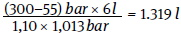
* Quelle: ISO 17420-4:2021-01
real verfügbares Atemgasvolumen im Pressluftatmer: 1.319 l
Ergebnis: Das verfügbare Atemschutzgerät mit dem ausgewählten Druckgasbehälter ist nicht für die geplante Tätigkeit geeignet.
Beispiel 2 (größerer Behälter):
Tätigkeit moderat: 30 l/min Atemminutenvolumen
Tätigkeitsdauer: 60 Minuten
Atemgasbedarf für die geplante Tätigkeit: 1.800 l
verfügbares Gerät: Pressluftatmer mit einem Druckgasbehälter mit einem Nennvolumen von 9 l und mit einem Nennfülldruck von 300 bar
Kompressibilitätsfaktor bei 300 bar und 15 °C: 1,10*
Restdruckwarnschwelle: 55 bar
Luftdruck: 1,013 bar
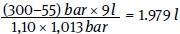
real verfügbares Atemgasvolumen im Pressluftatmer: 1.979 l
Ergebnis: Das verfügbare Atemschutzgerät mit dem neu ausgewählten Druckgasbehälter ist für die geplante Tätigkeit geeignet.
* Quelle: ISO 17420-4:2021-01
Für Regenerationsgeräte muss kein benötigtes Atemgasvolumen ermittelt werden. Hier gilt die technische Haltedauer des entsprechenden Regenerationsgerätes. Diese Geräte werden nach Klassen entsprechend ihrer nominellen Haltezeit (Tabelle 29 - Tabelle 34) eingeteilt.
4.5.1.3.23.2 Nicht frei tragbare Isoliergeräte mit geschlossenem Atemanschluss
Bei nicht frei tragbaren Isoliergeräten, deren Atemgasvorrat durch Druckgasbehältergröße und -fülldruck bestimmt wird, ist das erforderliche Atemgasvolumen analog zu Kapitel 4.5.1.3.23.1 zu ermitteln.
Wird für die Atemgaslieferung eine stationäre Luftversorgung genutzt, so muss sichergestellt sein, dass zu jeder Zeit für jede atemschutzgerättragende Person das benötigte Atemminutenvolumen zur Verfügung steht.
Für Frischluftsaugschlauchgeräte und Frischluftdruckschlauchgeräte mit geschlossenem Atemanschluss ist sicherzustellen, dass das aufgrund der Arbeitsschwere ermittelte Atemminutenvolumen von der atemschutzgerättragenden Person erreicht werden kann.
4.5.1.3.23.3 Nicht frei tragbare Isoliergeräte mit offenem Atemanschluss
Der maximale und minimale Volumenstrom ist bei offenen Atemanschlüssen von der Herstellerfirma in der Informationsbroschüre vorgegeben. Zur Ermittlung des erforderlichen Atemgasvolumens wird der maximale Volumenstrom mit der Gebrauchsdauer aus Kapitel 4.5.1.3.13 multipliziert.
erforderliches Atemgasvolumen [l] = Gebrauchsdauer [min] × maximaler Volumenstrom [l/min]
Rechenbeispiel für Druckluft-Schlauchgeräte mit kontinuierlichem Volumenstrom nach EN 14594:
Gebrauchsdauer: ca. 45 Minuten
maximaler Volumenstrom des ASG: 300 l/min
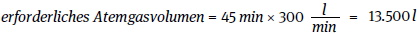
Beim Einsatz von Druckgasbehältern ist zusätzlich zum erforderlichen Atemgasvolumen der notwendige Restdruck zu berücksichtigen.
Sowohl beim Einsatz von Druckgasbehältern als auch bei der Nutzung einer stationären Druckluftversorgung als Atemgasquelle ist es notwendig, dass während der gesamten Gebrauchsdauer der maximale Volumenstrom für das Atemschutzgerät zur Verfügung steht.
Für Frischluftdruckschlauchgeräte mit offenem Atemanschluss ist sicherzustellen, dass das aufgrund der Arbeitsschwere ermittelte Atemminutenvolumen für die atemschutzgerättragende Person zur Verfügung steht.
Atemschutzgeräte für Fluchtzwecke ermöglichen der atemschutzgerättragenden Person die Flucht aus Bereichen mit schadstoffhaltiger und/oder sauerstoffarmer Umgebungsatmosphäre. Sie können Filtergeräte oder frei tragbare Isoliergeräte sein. In der Praxis werden sie auch als "Fluchtgeräte" oder "Selbstretter" bezeichnet.
Unter Flucht wird eine Bewegung der atemschutzgerättragenden Person von der Gefahrstelle weg in Richtung atembarer Atmosphäre verstanden. Darunter können auch noch kurzzeitige Nebenhandlungen auf dem Fluchtweg fallen, z. B. unterstützende Rettungsleistung von Personen oder gefahrmindernde Handlungen, wie das Betätigen von Ventilen oder das Abschalten von Apparaten, wenn dazu nicht in den Gefahrbereich vorgedrungen wird, also keine vorgeplante Bewegung entgegen der Fluchtrichtung geschieht.
Bei der Auswahl von Atemschutzgeräten für Fluchtzwecke müssen die im Fluchtfall möglicherweise auftretenden Gefährdungen, wie z. B.
berücksichtigt werden. Nach der Festlegung eines oder mehrerer geeigneter Atemanschlüsse können aus Tabelle 9 geeignete Atemschutzgeräte für Fluchtzwecke ausgewählt werden.
Atemschutzgeräte für Fluchtzwecke sind keine Arbeitsgeräte und dürfen nur für die Flucht benutzt werden, weil sie die Anforderungen, die an Arbeits- und Rettungsgeräte gestellt werden, nicht ausreichend erfüllen.
Für die Flucht können auch geeignete Atemschutzgeräte für Arbeit und Rettung ausgewählt werden. Dabei ist sicherzustellen, dass die verbleibende Gebrauchsdauer zu jeder Zeit größer als die zu erwartende Fluchtzeit ist.
Atemschutzgeräte für Fluchtzwecke können als stationär bereitgestellte Geräte oder als Mitführgeräte angeboten werden. Bei stationärer Bereitstellung ist leichte Erreichbarkeit sicherzustellen.
Um eine wartungsfreie Lagerung sowie eine Mitführung im betriebsbereiten Zustand über mehrere Jahre zu erreichen, sind Atemschutzgeräte für Fluchtzwecke in der Regel dicht verschlossen.
Bereits gebrauchte oder unbeabsichtigt geöffnete Atemschutzgeräte für Fluchtzwecke sind z. B. durch ein gebrochenes Siegel erkennbar und dürfen nicht mehr eingesetzt werden.
Für erforderliche Übungen im Rahmen der praktischen Ausbildung werden Übungsgeräte angeboten.
Im Rahmen der Gefährdungsbeurteilung ist festzulegen, ob Atemschutzgeräte für Fluchtzwecke persönlich zugeteilt oder für den Gefahrenfall bevorratet werden. Im Rahmen der allgemeinen Überlegungen ist sicherzustellen, dass auch ggf. für Betriebsfremde solche Geräte bereitgestellt werden müssen.
Tabelle 9 Übersicht zu Atemschutzgeräten für Fluchtzwecke
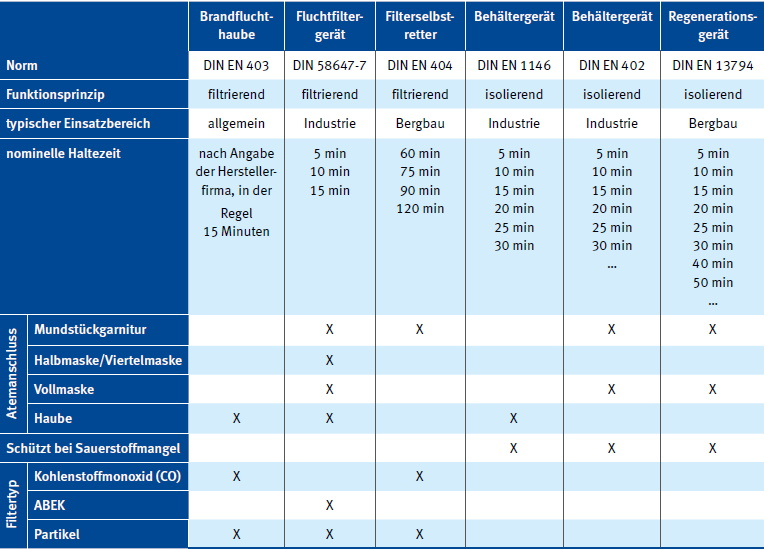